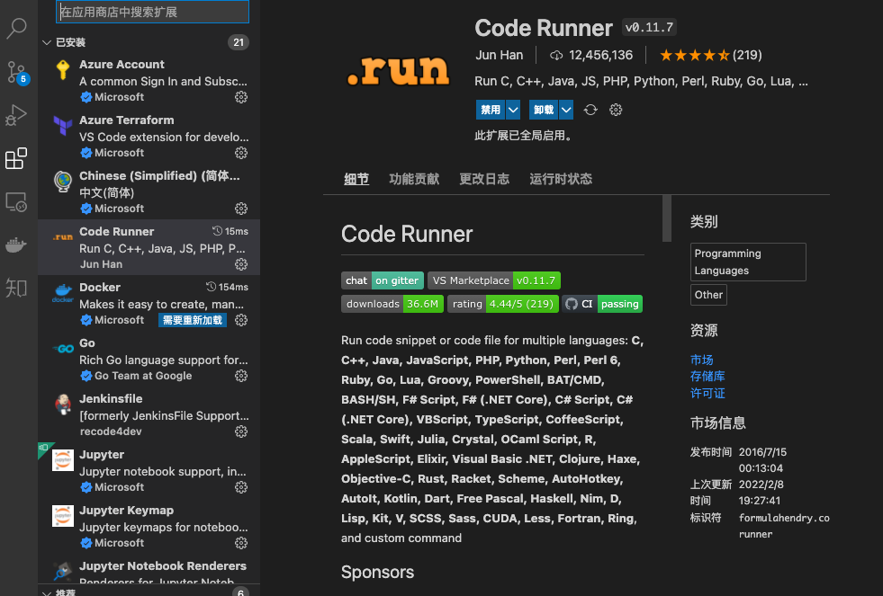

VSCode插件推荐=> Code Runner
VSCode 插件推荐=> Code Runner
Run code snippet or code file for multiple languages: C, C++, Java, JavaScript, PHP, Python, Perl, Perl 6, Ruby, Go, Lua, Groovy, PowerShell, BAT/CMD, BASH/SH, F# Script, F# (.NET Core), C# Script, C# (.NET Core), VBScript, TypeScript, CoffeeScript, Scala, Swift, Julia, Crystal, OCaml Script, R, AppleScript, Elixir, Visual Basic .NET, Clojure, Haxe, Objective-C, Rust, Racket, Scheme, AutoHotkey, AutoIt, Kotlin, Dart, Free Pascal, Haskell, Nim, D, Lisp, Kit, V, SCSS, Sass, CUDA, Less, Fortran, Ring, and custom command
可以用编译运行超过 40 种语言，非常的方便～
在 vscode 插件里安装

运行你的代码
- 键盘快捷键
Ctrl+Alt+N - 快捷键
F1调出 命令面板, 然后输入Run Code - 在编辑区，右键选择
Run Code - 在左侧的文件管理器，右键选择
Run Code - 右上角的运行
小三角按钮